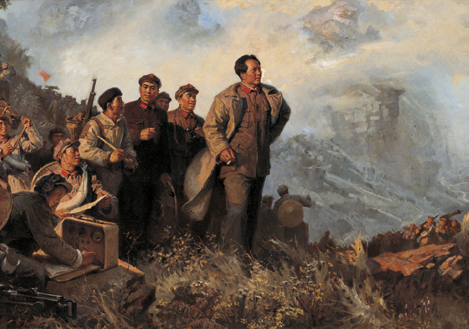

而今漫步从头越

1934年10月，第五次反“围剿”失败后，中央主力红军为摆脱国民党军队的包围追击，被迫实行战略性转移，退出中央根据地，进行长征。 长征是人类历史上的伟大奇迹，中央红军共进行了380余次战斗，攻占700多座县城，红军牺牲了营以上干部多达430余人，平均年龄不到30岁，共击溃国民党军数百个团，期间共经过14个省，翻越18座大山，跨过24条大河，走过荒草地，翻过雪山，行程约二万五千里，红一方面军于1935年10月到达陕北，与陕北红军胜利会师。1936年10月，红二、四方面军到达甘肃会宁地区，同红一方面军会师。红军三大主力会师，标志着万里长征的胜利结束